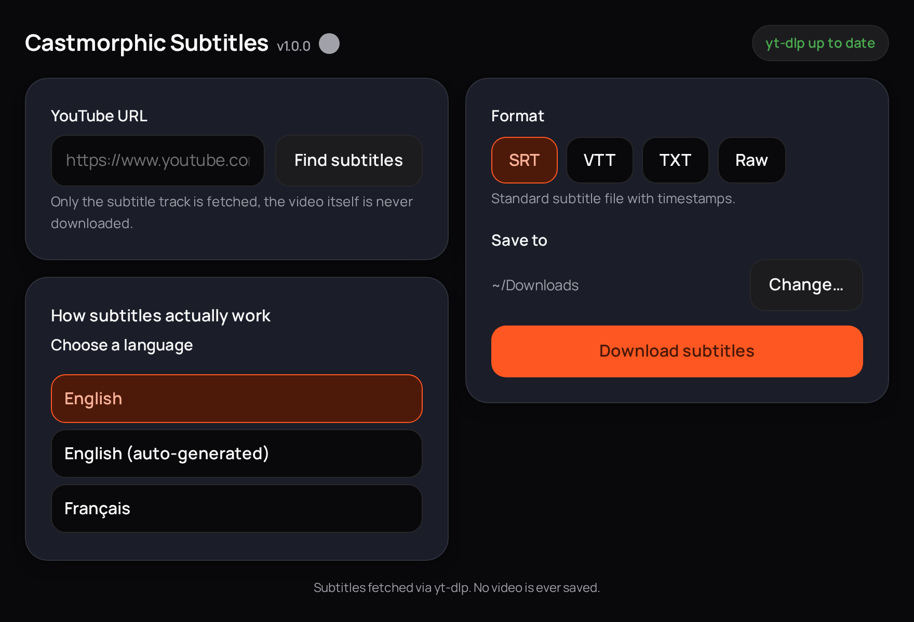

Get the subtitles.
Skip the video.
Paste a YouTube URL, pick a language and a format, get a subtitle
file. That's the whole app. The video is never downloaded,
skip_download is hardcoded on.

Small on purpose
No account, no telemetry, no browser required. One window, one job.
-
Subtitles only
The video track is never requested from YouTube. Nothing to wait for, nothing large to store.
-
English listed first
Every available language shows up, manual and auto-generated tracks both included, English sorted to the top.
-
Keeps itself current
Checks yt-dlp and its own version every time it starts. When YouTube changes something, an update is one click away.
-
Light and dark
Follows the desktop by default, with a toggle if it guesses wrong.
Four formats, one download
Pick the one that fits what you're doing with it.
- SRT
- Standard subtitle file with timestamps. Works everywhere.
- VTT
- WebVTT, the format most web video players expect natively.
- TXT
- Plain transcript. Timestamps and formatting stripped out, just the words.
- Raw
- Whatever YouTube actually served, unconverted.
Questions
Does it download the video as well?
No. Only the subtitle track is fetched. Skipping the video download is hardcoded on in the app and cannot be switched off, so nothing large is ever requested from YouTube or stored on your machine.
What subtitle formats can it save?
Four. SRT is the standard timestamped subtitle file. VTT is WebVTT, which web video players expect. TXT is a plain transcript with the timestamps stripped out. Raw is whatever YouTube served, unconverted.
What does it need installed to run?
Only python3, version 3.10 or newer, which current Linux
desktops already ship. The window, the browser engine and the Python
packages all travel inside the AppImage, so there is nothing to install
and no Docker or account involved.
Download Castmorphic Subtitles
Single AppImage. No install, no Docker, no account.
python3 (3.10+), which every current Linux desktop
already has.